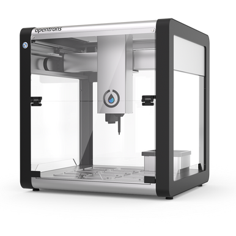

Laboratory Methods for Automated Biology
About the course
In the Laboratory Methods of Automated Biology course, I'm gaining hands-on experience with cutting-edge automation technologies used in modern biology labs. We're learning how to design and execute automated experiments, focusing on liquid handling, plate control, and remote operation of lab systems. One of the projects I'm working on involves setting up automated liquid handling and analyzing experimental data to control the system in real-time. We're also exploring high-content screening using fluorescence microscopy, where I get to work with tissue culture, image analysis, and advanced lab robotics. It's a great opportunity to develop skills that will be essential in fully automated labs of the future.
For more information visit 02761 LMAB/a>
Tasks :/h2>
Here, we compared and contrasted the protocol development process between the Opentrons OT-2 and the Analytic Jena Cybio Felix. Further, we described situations in which each device was better suited for specific tasks than the other.
Opentrons OT-2 had a very good user interface, making it easier to navigate without requiring prior knowledge of the software or extensive reference to documentation. Most of the machine’s functionality was easily accessible, and repetitive tasks were abstracted from the user to the system. The user could simply provide the expected end result, and the system would create the intermediate steps. For these reasons, we concluded that OT-2 was more user-friendly for developing protocols compared to Cybio Felix. Additionally, as OT-2 could carry two pipettes at once while Cybio operated with only one adapter, we believed it offered more flexibility for different types of operations. For single-tip dispensing, OT-2 was preferable for single-batch operations.
For multi-dispense and loop operations, we found that Cybio Felix was the better option. For instance, if a Fibonacci series needed more than ten steps, it would have been difficult to navigate on OT-2. However, on Cybio Felix, due to its similarity to programming languages, we could easily develop a protocol with a general rule applicable to any number of steps. In contrast, OT-2 required the final result for the plate, which involved more manual work. Additionally, Cybio Felix could read data files such as CSV for selecting coordinates, which OT-2 could not do. SQL commands could also be used on Cybio, offering more flexibility. Pipette tips needed to be arranged for multi-dispense of alternate tips on Cybio Felix, whereas OT-2 could either do the same or work with a single tip, though it required more time.
In conclusion, we believed OT-2 abstracted a significant part of the development process, offering fast and easy development, while Cybio Felix provided more control over each step, albeit at the cost of speed. Therefore, OT-2 was better for fast development and beginner tasks, while Cybio Felix was suited for more complex tasks requiring greater user control.